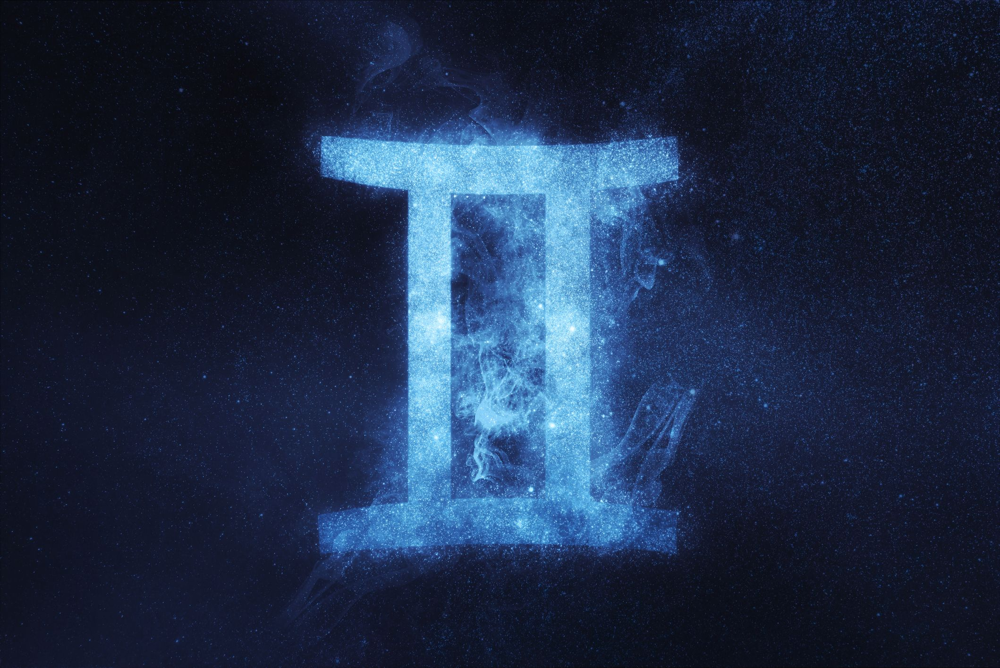

Common Traits of 12 Zodiac sign
· These are just some traits that the writer heard and observe from her life without formal research, so don't take these information too seriously
Fire
· People of this type of sign are known for their passion, optimistic, straightfoward, competitive
Aries(3/21-4/20)

· impulsive
· romantic
· stubborn
click to see this week horoscope
Leo(7/23-8/22)

· strong self-esteem
· slightly arrogant
· bossy
click to see this week horoscope
Sagittarius(11/23-12/21)
· love freedom
· careless
· maverick
click to see this week horoscope
Water
· People of this type of sign usually care about friendship and they are known for their sentimentality, gentle personality, sensitive, intuition
Pisces(2/19-3/20)
· indecisive
· unrealistic
· neurotic
click to see this week horoscope
Cancer(6/22-7/22)

· insecure
· take care of others
· love their family
click to see this week horoscope
Scorpio(10/24-11/22)

· harbor bitter resentment
· doninant
· mystery
click to see this week horoscope
Earth
· People of this type of sign are known for their patient, pragmatic, realistic, hardworking
Capricorn(12/22-1/20)

· love stability
· rational
· ambitious
click to see this week horoscope
Taurus(4/21-5/20)
· too realistic
· love beauty and art
· stubborn
click to see this week horoscope
Virgo(8/23-9/22)

· perfectionist
· conscientious
· full of ideals
click to see this week horoscope
Air
· People of this type of sign usually full of ideas and they are known for their , wisdom, communicative
Aquarius(1/20-2/18)

· creative
· talented
· strange
click to see this week horoscope
Gemini(5/21-6/21)

· Dual personality
· interesting
· active
click to see this week horoscope
Libra(9/23-10/23)

· not good at making decision
· peace
· lazy
click to see this week horoscope